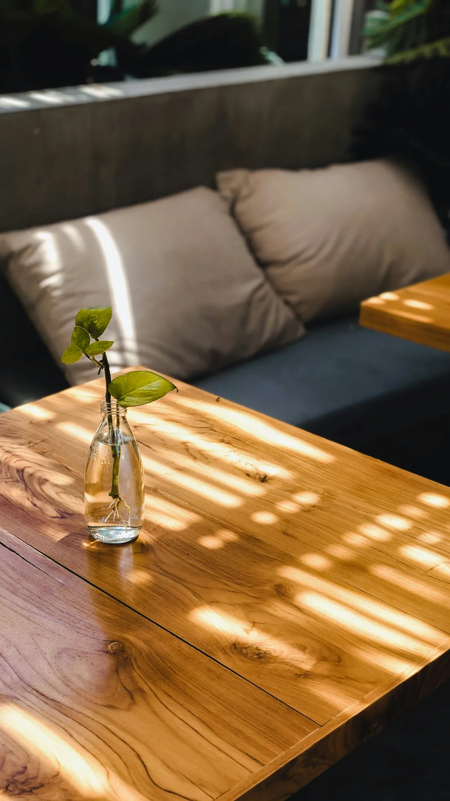
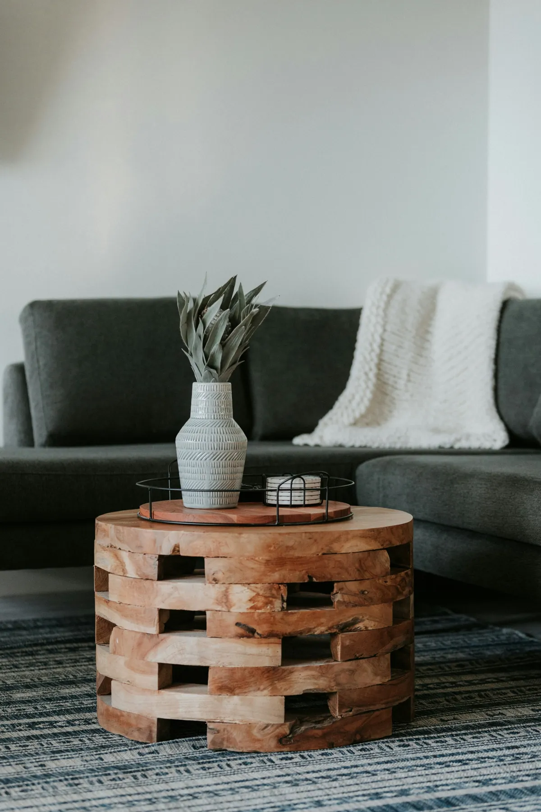

Based in Oakdale, MN · In person & online
A Space To Notice,
And To Grow
Therapy for teens, adults, and families navigating ADHD, life transitions, trauma, and more - with warmth, curiosity, and practical tools for lasting change.
Heather FeikemaLICSW, Licensed Therapist
In-network with major Minnesota insurance plans
We get stuck. It happens.
Often all it takes to move forward is the opportunity to find the time to notice - what isn't working, and what is. Notice the life you want to build, and find the skills to build it.
Whether it's been a few weeks or a few years since things felt manageable, therapy gives you a dedicated space to slow down and actually work through it - not just talk around it.
More about my approachYou've tried to push through it on your own.
Maybe you've read the books, talked to friends, told yourself it'll pass. Sometimes that's enough. Often, it isn't.
You don't have to figure it out alone.
I'd love to walk alongside you, with over 20 years of experience helping people navigate exactly this kind of moment.
A few of the most common reasons people reach out - if yours isn't listed here, that doesn't mean I can't help.
ADHD
Strategies that fit how your brain actually works
Anxiety & stress
Tools to feel more like yourself again
Relationships
Room for every voice at the table
Life transitions
Support through change, wanted or not
Trauma & PTSD
EMDR care, moving at your pace
Self-esteem & grief
Rebuilding confidence, one step at a time

Support that's grounded and steady
Real experience, real training, and a way of working that meets you where you actually are.
- 20+ years across school-based and outpatient settings, with children, teens, adults, and families
- Specialized certification in EMDR and TF-CBT for trauma-informed care that moves at your pace
- Meet in person in Oakdale or connect from anywhere in Minnesota
A space to be heard, without judgment.
I'm a Licensed Independent Clinical Social Worker with over 20 years of experience helping children, teens, adults, and families navigate life's hardest moments. I'll ask you to be curious with me - and I'll always meet you without judgment.
Find out more about meHow we'll work together
A simple, three-step path from reaching out to your first real session.
Reach out
Send a message or call for a free 15-minute consultation, no pressure attached.
Get to know each other
Your first session or two is about understanding your background, goals, and what brought you here.
Build a path forward
Together we'll identify practical tools and strategies that fit your goals and your life.
Wondering about any of this?
A few of the questions I hear most before someone reaches out.
The best way to find out is the free consultation. Therapy works best when you feel comfortable with your therapist, so take the time you need to decide, and don't hesitate to ask me anything.
Not at all. Many people come in without a formal diagnosis, just knowing something feels off or that they want support through a hard season. We start wherever you are.
It's a relaxed, no-pressure 15-minute conversation where we get to know each other a little and you can ask any questions you have. There's no obligation to book a full session afterward.
Yes - I offer both in-person sessions in Oakdale and online sessions across Minnesota, whichever works best for your schedule and comfort.
Sessions run about 50 minutes. Individual and couples sessions are $180. Visit the Rates and Insurance page for details on accepted insurance and payment options.
Ready to get started?
Reach out for a free 15-minute consultation - no pressure, just a conversation about whether we're a good fit.
Schedule your free consultationHi, I'm Heather.
Heather Feikema, LICSW
I'm a Licensed Independent Clinical Social Worker (LICSW) with over 20 years of experience helping children, teens, adults, and families navigate life's most difficult challenges - in both school-based and outpatient settings.
I'm licensed in Minnesota, with specialized trauma training in both EMDR and TF-CBT, plus advanced training in ADHD, relationship challenges, and parenting and attachment.
In our work together, expect me to be curious - and I'll ask you to be curious too. You can trust that I'll listen without judgement, but I'll also gently challenge you to move and grow.
"Let's figure this out together."
20+ years of clinical experience, licensed in Minnesota and Iowa, with specialized training in EMDR and TF-CBT.
Grounded, practical, and collaborative - with real training behind every session.
I draw on Cognitive Behavioral Therapy and Solution-Focused Therapy to connect your thoughts, feelings, and behaviors - building on the strengths you already have, with attachment-based and family systems approaches woven in where they fit. I'm direct and curious in session, and I strive to create a space where you feel genuinely heard. Most clients start to feel relief within the first few weeks.
What drew me to this work
Everyone deserves to feel truly heard. Over two decades, I've seen how much can shift when someone finally has a space that's just theirs - no judgement, no rushing, no pressure to have it all figured out.
That's what I try to offer every person who walks through my door, or logs onto our video call: a space to notice what's really going on, and the support to do something about it.
"Notice the life you want to build, and find the skills to build it."
In person in Oakdale, or online anywhere in Minnesota.
Being in the room together is always my first choice, but I've found telehealth just as supportive when that's what works best for your life.
Ask me a questionWhat working together looks like
A quick, honest picture of what to expect - and what you won't get - working together.
In-network with major Minnesota plans
Straightforward coverage so cost isn't a barrier to getting started.

See the full list of accepted plans on the Rates and Insurance page.
Curious if we're a good fit?
A free 15-minute consultation is the easiest way to find out.
Get in touchTherapy
Individual, couples, and family therapy for children, teens, adults, and seniors, in person in Oakdale or online across Minnesota - shaped around whatever brought you here, not a one-size-fits-all program.

Care shaped around you
No two people come in with the same story, so no two treatment plans look the same. Below are the areas I focus on most, but if you don't see your situation reflected, reach out anyway - there's a good chance I can still help.
Every specialty page below covers who it's for, what we'll actually work on, and how sessions are structured, so you can get a real feel for the work before you ever reach out.
The specialties clients ask about most, and everything else I help with too.
ADHD
Understanding and managing focus, executive function, and follow-through.
Anxiety & depression
Tools to feel more like yourself again.
Trauma and PTSD
Trauma-focused care, including EMDR, moving at your pace.
Life transitions
Support through change, career shifts, and finding your footing again.
Relationships & family
Room for every voice at the table.
Christian & faith-based
Care that makes room for your beliefs.
Young adults & college
Support through the years right after high school.
Self-esteem & grief
Rebuilding confidence, one step at a time.
I also work with OCD, maternal mental health, and men's and women's issues - reach out if you don't see your situation reflected above.
Meeting you wherever you are
Whatever stage of life you're in, and whatever approach fits best - the work is shaped around you, not a fixed script.
Every stage of life. Children, teens, adults, or seniors - sessions can be individual, couples, or family, with whoever needs to be in the room welcome in the room.
Real, established training. My core toolkit draws on CBT, EMDR, Solution-Focused Therapy, and attachment-based and family systems work, plus IFS and mindfulness-based approaches when they fit.
A steady rhythm. Most clients meet weekly at first, then shift to a schedule that fits as things progress. Sessions run about 50 minutes, in person in Oakdale or online.
In-network with major Minnesota plans
Straightforward coverage so cost isn't a barrier to getting started.
See the full list on the Rates and Insurance page.
Not sure which area fits your situation?
That's exactly what the free consultation is for.
Schedule a free consultationADHD
Practical, individualized support for focus, follow-through, and self-understanding - built around how your brain actually works.
Book a free consultationADHD looks different for everyone - scattered focus, trouble finishing what you start, feeling overwhelmed by tasks that seem simple to others. We'll spend time understanding your specific patterns rather than working from a generic checklist.
Teens and adults, at any stage
Newly diagnosed, or known for years and looking for something different - we'll start wherever you are, in person in Oakdale or online. In practice, that looks like:
- Understanding your patterns - how ADHD actually shows up for you, not a textbook version.
- Building systems that fit the way your brain works, instead of fighting it.
- Managing what tends to come with it - the anxiety and self-criticism that often ride along.
Common questions
Not at all. Many clients come in without one, just knowing something isn't working the way they want it to. We can explore whether ADHD fits as part of the work together.
No - I work with teens and adults, and many people first recognize their ADHD patterns as adults. Sessions are shaped around where you are now, not a childhood-focused program.
We'll definitely talk, but sessions also focus on building concrete systems and strategies you can actually put to use between sessions.
Yes. Medication and therapy often work well together, and therapy can address the day-to-day systems and habits that medication alone doesn't touch.
In-network with major Minnesota plans - see the full list on the Rates and Insurance page.
Curious if this fits your situation?
A free 15-minute consultation is a low-pressure way to find out.
Schedule a free consultationLife transitions
Support through change, big or small, at any stage of life - whether it's a change you chose or one that chose you.
Career changes, moves, becoming a parent, an empty nest, retirement, a breakup - even good change can leave you feeling unmoored. Therapy gives you a steady place to sort through what's shifting and what you actually want next.
- Rebuild a sense of footing when the ground feels unsteady
- Clarify what you actually want, not what you think you should want
- Build coping tools that carry you through whatever comes next
What we'll work through together
Whether the change was your choice or not, wherever you're at right now is the right place to start.
Naming what's shifting
Get clear on what's actually changing and how it's landing for you.
Finding your footing
Build coping tools for the uncertainty that comes with change.
Moving forward with clarity
Get clear on your priorities and what you actually want next.
Common questions
Anything that shifts how life feels day to day - a new job, a move, becoming a parent, an empty nest, retirement, a breakup, or a loss. If it's changed your footing, it's worth talking through.
It varies. Some clients come for a few months around a specific transition, others stay longer as new changes come up. We'll check in on pacing together.
That's common, and it's actually a good place to start - we'll figure out together what's actually weighing on you, even if it's not obvious yet.
Yes - even changes you chose can be disorienting. We'll work with whatever's actually showing up for you, regardless of whether the change was wanted.
In-network with major Minnesota plans - see the full list on the Rates and Insurance page.
Going through a big change?
A free 15-minute consultation is a low-pressure way to find out if I can help.
Schedule a free consultationTrauma and PTSD
Trauma-focused care, including EMDR, in a safe and steady space - moving at whatever pace actually feels okay for you.
Trauma can shape how safe the world feels long after the event itself is over. I'm trained in both EMDR and TF-CBT, two of the most well-supported approaches for helping the brain and body process difficult memories. We move at a pace that feels safe for you - there's no requirement to share every detail before you're ready.
"The goal is for difficult memories to carry less weight in your day-to-day life."
Who this helps
Anyone carrying the weight of a past event or ongoing PTSD symptoms.
Approach
EMDR and TF-CBT, chosen based on what fits your specific situation.
Format
In-person in Oakdale or online, individual sessions, moving entirely at your pace.
Common questions
EMDR (Eye Movement Desensitization and Reprocessing) is a trauma-focused therapy approach that helps the brain process difficult memories so they carry less weight day to day. We'll talk through whether it's a good fit for you before diving in.
No. We move at whatever pace feels safe, and EMDR in particular doesn't require you to describe the event in detail for it to work.
It varies quite a bit depending on the person and what you're working through - some people see meaningful shifts in a handful of sessions, others need more time. We'll check in on progress regularly.
Yes - EMDR can be effective for both recent and long-past events. The brain can still reprocess old memories even years later.
In-network with major Minnesota plans - see the full list on the Rates and Insurance page.
Ready to talk it through?
A free 15-minute consultation is a low-pressure first step.
Schedule a free consultationAnxiety and depression
Practical tools grounded in CBT and mindfulness, to help you feel more like yourself again.
Book a free consultationWhether it's constant worry, low motivation, or feeling disconnected from things you used to enjoy, anxiety and depression can make daily life feel heavier than it should. Using CBT and mindfulness-based approaches, we'll identify the patterns keeping you stuck and build practical tools to use between sessions, not just inside them.
Anyone feeling stuck in the same patterns
Whether anxiety or low mood have been part of your life for years or showed up more recently, we'll start wherever you are. In-person in Oakdale or online, individual sessions - often, that looks like:
Persistent worry, low mood, low motivation, or racing thoughts.
Common questions
Not exactly. We'll talk, but the focus is on identifying what's keeping the anxiety or low mood going and building practical tools you can use between sessions, not just process feelings in the room.
They often show up together and share some of the same tools, but we'll pay attention to your specific pattern - racing thoughts and worry call for different strategies than low motivation and flatness.
That's very common, and we don't need a clear cause to start - we'll work with what's actually happening for you now, regardless of where it came from.
Not necessarily. Some clients benefit from combining therapy with medication, others don't need it - that's a conversation we can have together, and I can point you toward a prescriber if it seems helpful.
In-network with major Minnesota plans - see the full list on the Rates and Insurance page.
Ready to feel more like yourself?
A free 15-minute consultation is a low-pressure first step.
Schedule a free consultationRelationships and family
Couples counseling, parenting support, and family conflict work - making room for every voice at the table, not just the loudest one.
Whether it's a couple working through a rough patch, a parent navigating a difficult season with a child, or a family in ongoing conflict, relationship work is about making room for every voice at the table. I draw on attachment-based and family systems approaches to help everyone involved feel heard, while building healthier patterns of communication going forward.
Support for every kind of relationship
Couples
Working through conflict or disconnection.
Parents
Navigating a hard season with a child.
Families
In ongoing conflict, seeking new patterns.
Common questions
Sessions are available in-person in Oakdale or online, in whatever combination of individual, couple, or family format fits what's going on.
Not necessarily - we can start together and bring in individual sessions if it's useful, depending on what's going on.
That's common, and we'll talk through how to approach it. Sometimes starting with just the parent is the right first step.
That's a fine place to start - the first sessions are about figuring out together what would actually help, not committing to one specific path.
Yes - families come in all shapes, and the work is about your specific dynamics, not a one-size-fits-all model.
In-network with major Minnesota plans - see the full list on the Rates and Insurance page.
Ready to work on this together?
A free 15-minute consultation is a low-pressure first step.
Schedule a free consultationYoung adults & college students
The years after high school bring a kind of pressure that's hard to explain to people who aren't in it. Figuring out who you are while everyone expects you to already know can be exhausting.
Book a free consultationWherever you're at - away at school, back home, or newly on your own - therapy can be one steady thing while everything else is in flux. In-person in Oakdale or online, scheduled around a college or early-career calendar, because life at this stage rarely fits into a 9-to-5.
Common threads I see
Every story's different, but these come up again and again.
- Academic pressure - burnout, motivation, and the weight of expectations.
- Homesickness - building a new support system somewhere unfamiliar.
- Identity & independence - figuring out who you are and what's next.
- Relationship changes - friendships and relationships shifting as life does.
- Anxiety & mood - support if things got harder after a big move.
"You don't have to have it figured out yet. That's not a flaw - it's where growth starts."
- Heather
What sessions look like
Flexible scheduling
Sessions fit around a semester, finals week, or an unpredictable early-career schedule.
Meet however works
In-person in Oakdale or online from your dorm room, apartment, or wherever you are.
No pressure to arrive with answers
You don't need to know exactly what's wrong - we'll figure it out together.
Common questions
Yes - many young adult clients are. We can talk through what that means for privacy and billing before we start, so there are no surprises.
Online sessions make it easy to stay consistent during the school year and pick back up when you're home, so scheduling around a college calendar isn't a problem.
That's a completely normal place to start. A lot of the early work is simply figuring out what's actually going on.
It can be - campus counseling is often short-term and session-limited. This gives you a consistent therapist and more flexibility in how long we work together.
In-network with major Minnesota plans - see the full list on the Rates and Insurance page.
Figuring out what's next?
A free 15-minute consultation is a low-pressure first step.
Schedule a free consultationChristian & faith-based therapy
For many people, faith is a central part of how they understand themselves, their relationships, and their healing.
This isn't a separate kind of therapy so much as an openness to bring your whole self into the room, including your faith, if that's part of how you make sense of things. We can talk about how your faith fits into the work we do together, at whatever level feels right to you - in person in Oakdale or online.
"Whether faith is central to how you approach healing or just one piece of the picture, it has a place here."
- Prayer & scripture - woven into sessions if that's part of how you process.
- Faith & mental health tension - working through guilt, doubt, or "why is this happening."
- Faith transitions - support through a crisis of faith or shifting beliefs.
- Values-aligned care - you won't be asked to set your beliefs aside.
Faith and healing aren't in competition here - they can work together.
How this fits into sessions
At your pace
We'll talk about faith only as much, or as little, as feels right to you.
No specific tradition required
This isn't tied to one denomination or church community.
Still fully licensed clinical care
Faith-friendly doesn't mean less rigorous - you're still getting full clinical support.
Common questions
Only if you want me to. Some clients want scripture, prayer, or faith language woven into our work; others just want a therapist who won't dismiss their beliefs as part of the picture. We'll figure out together what's most helpful for you.
No - this isn't about a specific church or tradition. It's about making sure your faith, whatever that looks like for you, has a place in the room if you want it there.
That's welcome here too - this isn't about reinforcing a specific belief, it's about making space for wherever you actually are with your faith.
This is licensed clinical therapy - faith can be part of the conversation, but you're getting full clinical care, not a substitute for pastoral counseling.
In-network with major Minnesota plans - see the full list on the Rates and Insurance page.
Curious if this is a good fit?
A free 15-minute consultation is a low-pressure way to find out.
Schedule a free consultationInvesting in your care
Clear, upfront pricing so cost is never a surprise. I'm in-network with most major Minnesota insurance plans, along with cash, check, and Venmo - and every new client starts with a free 15-minute consultation.
no surprises, just clarity$180 / session
Individual & couples
Straightforward pricing, no surprises.
Here's exactly what to expect before your first session.
Free 15-minute consultation before your first session. Cash, check, and Venmo also accepted.
In-network with most major Minnesota plans. Not sure if yours is included? Reach out and I'm happy to help you check. If you're uninsured or self-pay, you have the right to a good faith estimate of expected costs, available upon request.
Major Minnesota insurance plans
The plans I'm currently in-network with, at a glance.
Also in-network with: UCare · Medicaid · Medica · Hennepin Health · South Country Health Alliance
Don't see your plan? Reach out - self-pay options are also available.
Before your first session
A few practical things to know as you get started.
- Verifying coverage - not sure if your insurance is in-network? Reach out and I'm happy to help you check before we get started.
- Session length - sessions run about 50 minutes, whether you're meeting in person or online.
- Getting started paperwork - you'll complete a short intake form before your first session so we can make the most of our time together.
- Telehealth - online sessions use a secure, HIPAA-compliant video platform - no special software needed.
- Cancellations - life happens. I ask for as much notice as possible if you need to reschedule or cancel a session.
Questions about cost or coverage?
Ask during your free consultation, no obligation either way.
Get in touchFAQs before you reach out
questions, answeredReaching out for therapy for the first time - or trying a new therapist - comes with a lot of questions. Below are the ones I hear most. Don't see yours here? Just ask - that's exactly what the free consultation is for.
Getting started
Sessions are a mix of conversation and practical work - we'll talk through what's going on, but I'll also bring in concrete tools and strategies you can use between sessions, not just talk about in them.
It's a relaxed, no-pressure 15-minute conversation where we get to know each other a little and you can ask any questions you have. There's no obligation to book a full session afterward.
The best way to find out is the free consultation. Therapy works best when you feel comfortable with your therapist, so take the time you need to decide, and don't hesitate to ask me anything.
Sessions & logistics
We'll spend time getting to know each other - what's bringing you in, your current concerns, and what you're hoping will change. Rather than expecting you to have it all figured out, we'll work together to identify your goals and start building a plan that's personalized to you. There's no pressure to share everything at once - we move at whatever pace feels right, and by the end you should leave feeling heard, with a clearer sense of how we'll work together.
Yes - I offer both in-person sessions in Oakdale and online sessions across Minnesota, whichever works best for your schedule and comfort.
Most clients start weekly, especially early on, then shift to a schedule that fits as things progress. We'll talk about pacing together, and it can always change as your needs do.
That's completely fine - many clients move between the two depending on their schedule or how they're feeling that week.
In-person sessions are held at Optimal Brain MN Clinic in Oakdale, and that's also where you'll book if you'd like to meet in person. If you're looking for telehealth only, you can book through either Optimal Brain or Headway - whichever is easier for your insurance.
"There's no such thing as a silly question - reach out anytime."
Care & approach
EMDR (Eye Movement Desensitization and Reprocessing) is a trauma-focused therapy approach that helps the brain process difficult memories so they carry less weight day to day. We'll talk through whether it's a good fit for you before diving in.
Not at all. Many people come in without a formal diagnosis, just knowing something feels off or that they want support through a hard season. We start wherever you are.
I work with children, teens, adults, and seniors, and I see individuals, couples, and families.
Rates, policies & confidentiality
Sessions run about 50 minutes. Individual and couples sessions are $180. Visit the Rates and Insurance page for details on accepted insurance and payment options.
Life happens. I ask for as much notice as possible if you need to reschedule or cancel, so I can offer that time to another client.
Yes, with the standard legal and ethical exceptions therapists are required to follow (like risk of harm to yourself or others). I'll walk through confidentiality in detail during your first session.
It depends entirely on your goals. Some people come for a few months around a specific transition, others work with me for years. We'll check in regularly on progress together.
Can't find the answer you're looking for?
Still have a question?
Reach out directly - there's no such thing as a silly question before you get started.
Ask a questionGet in touch
Let's find a time to talk.
Reach out for a free 15-minute consultation - no pressure, just a chance to see if we're a good fit, with no obligation to book anything further afterward.
Call 651-321-8943Location
In-person at Optimal Brain MN Clinic
992 Inwood Ave, Oakdale, MN 55128
Telehealth
Book through Optimal Brain or Headway - whichever works best for your insurance.
Phone
Office hours
Availability changes regularly, so reach out even if you're not sure I have space - I'll let you know what's open.
Send a message
Fill this out and I'll follow up to set up your free consultation.
What to expect between now and your first session.
Once you reach out, you'll hear back within 1–2 business days by email or phone, whichever you'd prefer. From there, we'll set up a relaxed 15-minute call to talk about what brought you here and whether I'm the right fit. If it feels right for both of us, we'll find a time for your first session and get you set up in the client portal.
Have a question before booking? Visit the FAQ page for what most people ask first.